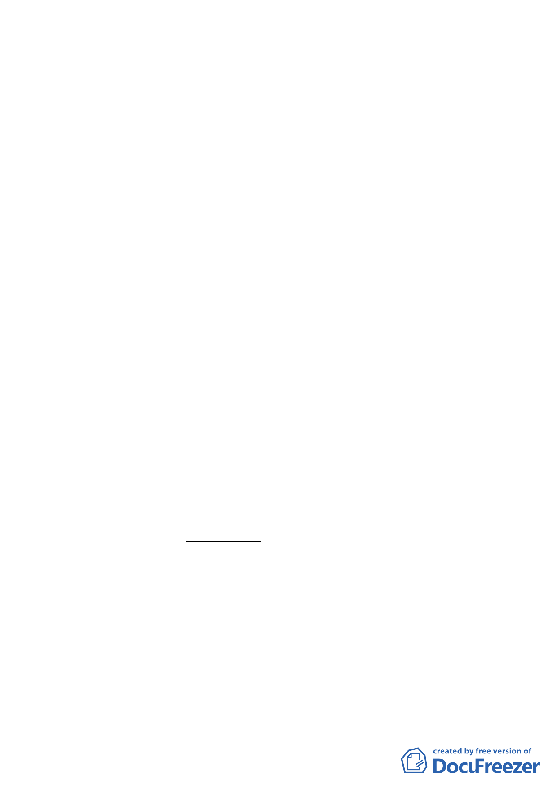

三、法令依據：都市計畫法第 66 條、都市更新條例第 5 條、第 6
條第 1 項第 1 款及第 2 款、第 8 條、第 11 條、第
27 條及都市更新條例施行細則第 5 條。
四、計畫位置：詳計畫圖所示。
五、計畫理由及內容：詳計畫書。
六、市府依本會第 554 次委員會議討論事項五：擬劃定「臺北市
大安區通化段六小段 665 地號等 35 筆土地為更新地區（更新
單元）」案決議，於 95 年 8 月 4 日以北市都授新字第
09530581600 號函送補充資料到會。
決議：本案依下列各點修正後通過。
一、對於基地東北側面臨 6 公尺計畫道路及西北側 4 公尺
巷道部分，宜於更新計畫說明書規定「基地東北側面
臨 6 公尺計畫道路及西北側 4 公尺巷道，應分別至少
退縮 2 公尺及 4 公尺以上無遮簷人行道方式處理（以
達 8 公尺寬度），計畫道路及巷道與人行道銜接處並作
順平處理，且保持平坦，不能有妨礙車輛通行及操作
之突出固定設施，地面至少能承受 75 公噸重總重量，
以提升更新單元之防救災措施。」
二、本案更新計畫書內「實施方式」修正為：「本案擬以權
利變換或協議合建方式實施」。
三、基地北側截角應朝浦城街 22 巷順接；另案內開放空間
之留設亦應集中留設於基地北側之截角處。
討論事項三－4
案名：擬劃定「臺北市松山區敦化段一小段 703 地號等 9 筆土地
為更新單元」都市更新計畫案
說明：
八